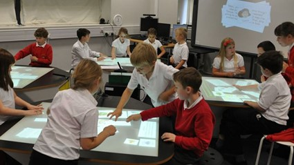
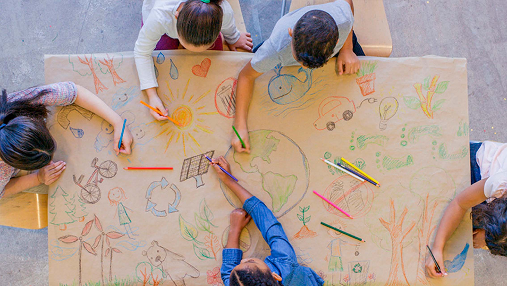

Ideas Esenciales
- Son espacios donde los recursos y actividades están diseñados para que los estudiantes puedan trabajar de manera autónoma.
- Fomenta el aprendizaje activo, permitiendo que el estudiante tome un rol protagonista en su proceso formativo.
- Ofrece experiencias de aprendizaje variadas, todas orientadas a alcanzar un objetivo en común.
- Cada centro debe ofrecer estrategias diversas que involucren, desafien y motiven al cumplimiento de los objetivos.
- Esta metodología no se limita al trabajo colaborativo; también permite planificar actividades para que el estudiante fortalezca sus habilidades individuales.
- El rol del maestro es ser guía y facilitador del aprendizaje, siendo responsable de diseñar estrategias que impulsen el aprendizaje autodirigido y significativo de sus estudiantes.

¿Cómo planificar centros de aprendizaje?

×
Un objetivo por centro
Puedes trabajar con 4 objetivos, uno por centro. Cada grupo de estudiantes trabaja en una actividad distinta, enfocada en un objetivo específico diferente.
Te permite establecer grupos homogéneos, según sus necesidades específicas: nivel de aprendizaje, forma de aprender o intereses.
×
Hacia un mismo objetivo
Puedes planificar de modo que todos los centros estén diseñados para alcanzar los mismos objetivos de aprendizaje, pero cada uno mediante actividades variadas e interesantes.
El estudiante puede explorar el mismo contenido y consolidar sus conocimientos de diferentes maneras.
Además, se pueden establecer grupos heterogéneos, lo cual te da la oportunidad de trabajar mejor el desarrollo de habilidades sociales (empatía, respeto, entre otros.) entre los estudiantes.
Beneficios
- Promueve la autonomía de los estudiantes (aprenden a su propio ritmo, toma de decisiones, asumen responsabilidad).
- Incrementa la motivación instrínseca por aprender.
- Da oportunidades grandes de interracción social para el aprendizaje colaborativo y desarrollo de habilidades sociales.
- Al docente le permite satisfacer de mejor forma las necesidades individuales de sus estudiantes.
- Se pueden integrar habilidades de diversas disciplinas en actividades significativas.

Retos
- La disponibilidad de recursos físicos puede limitar la implementación de actividades.
- Exige una planificación detallada y cuidadosa como el diseño de actividades variadas y coherentes, organizar materiales y prever adaptaciones.
- Es un desafío la gestión del tiempo, el mantener el ritmo adecuado en cada centro y respetar los tiempos sin que los estudiantes se atrasen o se queden sin tarea.
Justificación: ¿Por qué esta metodología?
- Centros aprendizaje se selecciona por su capacidad para transformar el aula en un entorno activo, flexible y centrado en el estudiante.
- Muestra como los estudiantes pueden aprender de una manera más efectiva cuando participan activamente y asumen responsabilidades.
- Todos se benefician cuando se presenta un contenido en distintas representaciones porque se respeta y aprecia los diversos estilos de aprendizaje, readiness e intereses.
- Mediante esta metodología tienen la oportunidad para desorrollar habilidades individuales y sociales tan importantes como la toma de decisiones, empatía, respeto y el trabajo equipo.
- Además, al docente le permite observar y evaluar de manera más eficiente el desempeño de sus estudiantes en tiempo real, y realizar retroalimentaciones más individualizadas.

Planificación de Ejemplo
 Ver planificación en PDF
Ver planificación en PDF
Referencias
- Henao, A. (2018). Implementación de la estrategia de centros de aprendizaje en el enfoque pedagógico de aulas heterogéneas.Universidad del Valle, Facultad de Humanidades, Escuela de Estudios Literarios.
- Pattillo, J., & Vaughan, E. (1992). Learning centers for child-centered classrooms. HarperCollins Publishers.